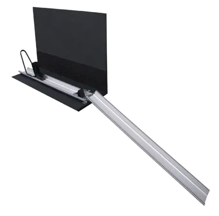

Ratgeber · 18.08.2026
Heckgarage anbohren für die Motorradhalterung – muss das sein?

Kaum eine Frage taucht in Camperforen so oft auf. Die einen halten es für unproblematisch, die anderen warnen vor Wassereinbruch und ausgerissenen Schrauben. Wir haben die Herstellerangaben, die Praxis aus drei Werkstätten und die Alternativen zusammengetragen – und sagen auch, wo die Grenzen liegen.
Italia Camper 24 · Lesezeit ca. 6 Minuten · Zuletzt aktualisiert: August 2026
Für die feste Montage einer Motorrad-Standschiene sind laut Herstelleranleitung zwei Bohrungen mit 11 mm Durchmesser nötig – nicht mehr. Wer gar nicht bohren will, montiert die Schiene auf eine eigene Bodenplatte und legt diese lose ein. Beide Wege funktionieren, haben aber unterschiedliche Vor- und Nachteile.
- Woher die Sorge kommt
- Was der Hersteller tatsächlich vorschreibt
- Warum zwei Schrauben ausreichen
- Variante ohne Bohren: die eigene Bodenplatte
- Fachgerecht bohren – Schritt für Schritt
- Was ist mit Garantie und Versicherung?
- Welche Variante passt zu wem?
Der Boden einer Wohnmobil-Heckgarage ist in den allermeisten Fällen ein Sandwichboden: zwei dünne Deckschichten aus GfK oder Aluminium, dazwischen ein Kern aus Hartschaum oder Sperrholz. Diese Bauweise ist leicht und steif – aber sie verzeiht keine Fehler beim Bohren. Zwei Dinge können schiefgehen.
Erstens Feuchtigkeit. Bleibt eine Bohrung offen oder wird schlecht abgedichtet, zieht Wasser in den Kern. Bei Hartschaum bleibt es meist beim Fleck, bei Holzkernen kann es zu Quellung und Fäule kommen. Deshalb steht in praktisch jeder Herstelleranleitung ein Hinweis auf Korrosions- und Nässeschutz nach dem Bohren.
Zweitens Ausreißen. Wer eine Schraube nur mit einer kleinen Unterlegscheibe gegenhält, konzentriert die gesamte Zugkraft auf wenige Quadratzentimeter. Bei einer Vollbremsung mit 150 kg Zweirad dahinter kann die Schraube durch die dünne Deckschicht gezogen werden. Genau davor warnen erfahrene Camper – und sie haben recht, wenn falsch montiert wird.
Beide Risiken sind real. Beide sind aber beherrschbar, wenn man weiß, wie. Und beide betreffen nicht die Frage ob gebohrt wird, sondern wie .
In der Anbauanleitung T00203 von SMV-Metall für das Standard-Schienen-Set steht der entscheidende Satz nüchtern und ohne Umschweife: Standschiene ausrichten, Bohrungen mit 11 mm Durchmesser einbringen, anschließend die Schiene mit dem Garagenboden verschrauben. Die zugehörige Teileliste umfasst vier Positionen.
Zwei Löcher, zwei Schrauben, vier Scheiben. Das ist der komplette Eingriff in den Fahrzeugboden. Wer mit zwanzig Bohrungen rechnet, überschätzt die Sache deutlich – dieser Eindruck entsteht meist, weil Vorderradbügel, Wippe und Hinterradkeil ebenfalls verschraubt werden. Diese Teile sitzen jedoch über sogenannte Halfen-Gewindeplatten in der Nut der Schiene selbst und berühren den Fahrzeugboden nie.
„Auf Korrosionsschutz ist nach dem Bohren von Löchern zu achten." – So steht es wörtlich in der Anleitung. Kein Kleingedrucktes, sondern der erste Hinweis auf der ersten Seite.
Die Antwort steckt in der unscheinbarsten Position der Teileliste: den vier Karosseriescheiben nach DIN 9021. Eine normale Unterlegscheibe für M10 hat etwa 20 mm Außendurchmesser. Eine Karosseriescheibe derselben Größe misst rund 30 mm – die Auflagefläche ist damit mehr als doppelt so groß.
Das klingt nach einer Kleinigkeit, entscheidet aber über alles. Die Kraft, die beim Bremsen auf die Verschraubung wirkt, verteilt sich auf diese Fläche. Je größer sie ist, desto geringer die Flächenpressung auf die dünne Deckschicht des Sandwichbodens. Zwei Schrauben mit großen Scheiben halten deshalb besser als vier Schrauben mit kleinen.
Dazu kommt die Schiene selbst. Sie ist knapp zwei Meter lang und liegt über ihre gesamte Länge auf. Das Gewicht des Zweirads drückt also nicht punktuell auf zwei Reifenaufstandsflächen, sondern verteilt sich flächig. Die Schrauben halten im Wesentlichen gegen das Verrutschen und Abheben – nicht gegen das Gewicht.
Der Hersteller empfiehlt, sämtliche Befestigungsschrauben nach etwa 1.000 gefahrenen Kilometern einmal nachzuziehen. Sandwichböden setzen sich unter Last minimal. Wer diesen einen Handgriff macht, hat danach jahrelang Ruhe – wer ihn auslässt, wundert sich irgendwann über eine lockere Schiene und hält das Produkt für schlecht.
Wer partout kein Loch im Fahrzeugboden will – etwa bei einem Leasingfahrzeug, einem Mietwohnmobil oder aus reiner Vorsicht – hat eine funktionierende Alternative: Die Standschiene wird nicht am Fahrzeug befestigt, sondern auf einer eigenen Bodenplatte montiert.
- Platte zuschneiden Alublech oder mehrfach verleimtes Sperrholz ab etwa 19 mm Stärke. Rundum einige Zentimeter größer als die Schiene, damit sich die Last verteilt. Kanten brechen und bei Holz die Schnittflächen versiegeln.
- Schiene aufschrauben Dieselben zwei M10-Schrauben, dieselben Karosseriescheiben – nur eben durch die Platte statt durch den Fahrzeugboden. Von unten mit den Sicherungsmuttern kontern.
- Platte sichern Entweder lose einlegen und mit Zurrgurten an vorhandenen Leisten fixieren, oder – falls vorhanden – an bereits existierenden Befestigungspunkten verschrauben. Eine rutschhemmende Matte darunter hilft zusätzlich.
- Bei Bedarf komplett entnehmen Fahren Sie ohne Zweirad, nehmen Sie die ganze Einheit heraus. Der Stauraum steht wieder vollständig zur Verfügung – ein Vorteil, den die feste Montage nicht bietet.
Der Diebstahlschutz ist geringer. Bei fest verschraubter Schiene müsste ein Dieb Werkzeug ansetzen; bei der losen Platte lässt sich im Zweifel die ganze Einheit mitsamt Zweirad bewegen. Wer sein Motorrad auf Stellplätzen über Nacht in der Garage lässt, fährt mit der festen Montage sicherer. Wer die Flexibilität braucht oder das Fahrzeug nicht verändern darf, ist mit der Platte gut bedient.
Wenn Sie sich für die feste Montage entscheiden, entscheidet die Sorgfalt über das Ergebnis. Diese Reihenfolge hat sich in unseren Werkstätten bewährt.
- Position festlegen und prüfen, was darunter liegt Schiene ausrichten, Bohrpunkte anzeichnen. Dann unter dem Fahrzeug nachsehen: Verlaufen dort Leitungen, Tanks, Kabel oder Rahmenprofile? Dieser Blick dauert fünf Minuten und verhindert den teuersten aller Fehler.
- Von oben durchbohren, 11 mm Mit scharfem Bohrer und ohne Druck arbeiten, damit die Deckschicht nicht ausfranst. Bei GfK hilft es, mit kleinerem Durchmesser vorzubohren und dann aufzuweiten.
- Bohrung versiegeln Das ist der Schritt, den die meisten überspringen. Bohrlochränder mit dauerelastischem Dichtstoff einstreichen, bei Holzkernen zusätzlich das Bohrloch selbst. So kommt keine Feuchtigkeit an den Kern.
- Kontaktflächen reinigen Unterbodenschutz oder Wachs an den Verschraubungspunkten entfernen – auch das steht so in der Herstelleranleitung. Sonst setzt sich die Verbindung mit der Zeit und die Schrauben lockern sich.
- Verschrauben mit großen Scheiben oben und unten Karosseriescheibe oben, Karosseriescheibe unten, Sicherungsmutter kontern. Bei sehr dünnen Böden zusätzlich eine größere Gegenplatte aus Alublech unterlegen.
- Nach 1.000 km nachziehen Termin im Kalender notieren. Danach genügt eine Sichtkontrolle vor längeren Fahrten.
Wer sich das nicht zutraut, muss es nicht selbst machen. In unseren Vertragswerkstätten in Bohmte, Celle und Diez übernehmen wir den Einbau zur festen Pauschale – inklusive Abdichtung und dokumentierter Montage nach Herstellervorgabe.
Die häufigste Sorge nach dem Bohren selbst. Zwei Dinge sind zu unterscheiden.
Die Fahrzeuggarantie erlischt durch einen fachgerechten Anbau nicht pauschal. Sie kann aber für Schäden entfallen, die nachweislich durch den Umbau entstanden sind – also etwa für Feuchtigkeitsschäden am Boden, wenn schlecht abgedichtet wurde. Wer die Anleitung einhält und im Zweifel eine Werkstattrechnung vorlegen kann, ist auf der sicheren Seite.
Bei der Versicherung gibt der Hersteller einen deutlichen Hinweis: Um ein Erlöschen der Haftpflicht- versicherung zu vermeiden, dürfen für den weiteren Anbau des Systems ausschließlich Anbauelemente von SMV-Metall verwendet werden. Wer also Schrauben aus dem Baumarkt einsetzt oder Teile anderer Hersteller kombiniert, bewegt sich außerhalb der Freigabe. Die mitgelieferten Teile zu verwenden ist deshalb kein Detail, sondern die Grundlage.
Ein praktischer Hinweis, der in der Anleitung ebenfalls steht: Bewahren Sie das Dokument auf und legen Sie es zu den Fahrzeugpapieren. Bei einer Kontrolle, beim Verkauf oder im Schadensfall ist es der Nachweis, dass ordnungsgemäß montiert wurde.
- Höchster Diebstahlschutz
- Kein Verrutschen, auch ohne zusätzliche Gurte
- Kein Platzverlust durch eine Bodenplatte
- Zwei Bohrungen bleiben nach dem Rückbau
Passt zu: Eigenen Fahrzeugen, die länger gefahren werden, und allen, die das Bike auch mal über Nacht in der Garage lassen.
- Kein Eingriff in den Fahrzeugboden
- Komplett entnehmbar, wenn kein Zweirad mitfährt
- Beim Fahrzeugwechsel einfach umsetzbar
- Geringerer Diebstahlschutz, etwas Höhe geht verloren
Passt zu: Leasing- und Mietfahrzeugen, Vermietern und allen, die flexibel bleiben wollen.
Beide Wege sind legitim. Wer unsicher ist, kann mit der Bodenplatte beginnen und später fest verschrauben – umgekehrt geht es nicht. Das ist ein Argument, das in der Diskussion selten fällt.
Fazit
Die Angst vor dem Bohren ist verständlich, aber sie richtet sich meist gegen ein Bild, das größer ist als die Wirklichkeit. Zwei Löcher mit 11 mm, große Scheiben zur Lastverteilung, sauber abgedichtet – das ist der ganze Eingriff. Wer ihn nicht selbst machen will, lässt ihn machen. Wer ihn gar nicht machen will, nutzt die Bodenplatte.
Was Sie in keinem Fall tun sollten: das Zweirad nur mit vier Zurrgurten an den Wandösen sichern und hoffen. Genau das ist die Variante, bei der nach zweihundert Kilometern etwas schiefgeht – und sie ist die einzige, über die in Foren wirklich berichtet wird.
Fragen zu Ihrem Fahrzeug?
Schicken Sie uns ein Foto Ihrer geöffneten Heckgarage. Wir sagen Ihnen, ob die Schiene passt, welche Montageart wir empfehlen und was der Einbau bei uns kostet – kostenlos und meist noch am selben Tag.
Passend dazu
Kommentar schreiben